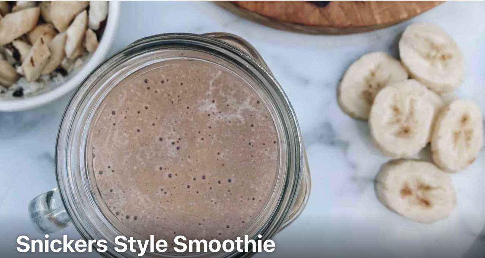

Description
A healthy version of a decadent favourite.
Ingredients
- 304g Almond milk (unsweetened)
- 109g Banana
- 6g Cocoa powder
- 15g Natural peanut butter
- 6g Honey
Steps
- Blend all ingredients together.
- Tip: Use frozen banana to improve consistency or add ice.